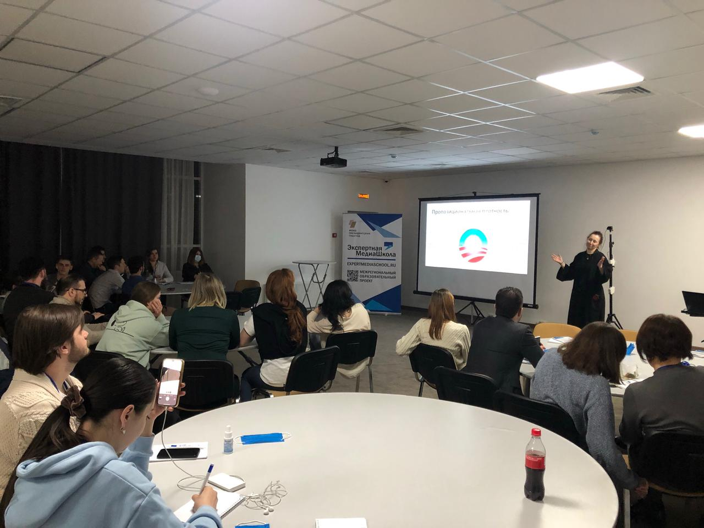
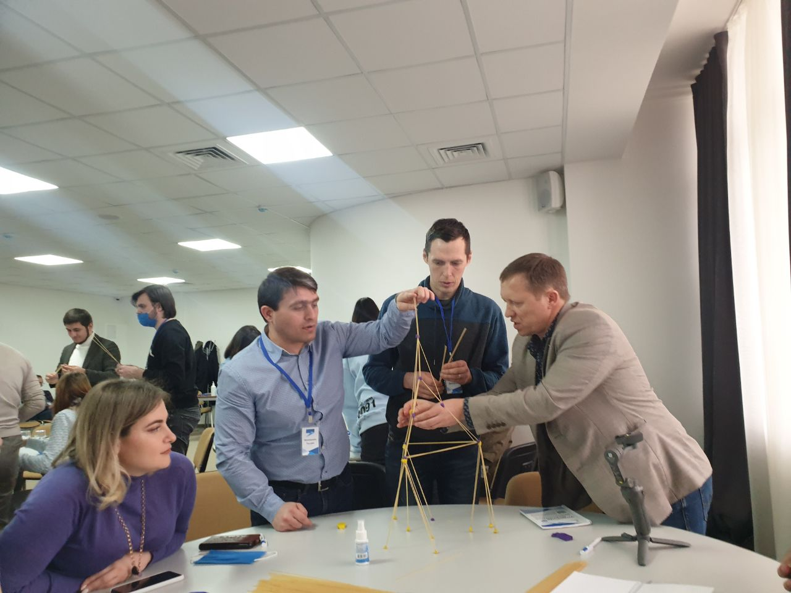

«Экспертная медиашкола» готовит специалистов по работе в публичном информационном пространстве
«Экспертная медиашкола» дает мощнейший импульс развитию социальных медиа, взаимодействию между блогерами и государственными институтами регионов Северного Кавказа

35 участников, 35 образовательных часов, более десяти региональных и федеральных спикеров — с такими результатами завершил свою работу третий семинар «Экспертной медиашколы».
Мероприятие проходило с 25 по 28 марта на площадке гостиничного комплекса «Орлиные скалы» в городе Лермонтов Ставропольского края. Получать новые знания и обмениваться опытом съехались молодые журналисты и блогеры, специалисты департаментов информационной политики и связей с общественностью, финалисты и полуфиналисты конкурсов «Лидеры России» из всех регионов СКФО.
Участники семинара занимались по в насыщенной образовательной и культурной программе: командообразующие мероприятия, лекции, экспертные сессии, круглые столы, деловую и интеллектуальную игры.
Политические коммуникации, освещение межэтнических проблем в медиапространстве, интернет-аналитика, экспертиза информационного поля и SWOT-анализ медиасюжетов, создание визуального контента, современные тренды в социальных сетях, работа с блогерами — эти и многие другие темы удалось обсудить на площадке семинара в течение четырех дней.
Спикерами мероприятия выступили начальник отдела мониторинга и анализа СМИ Управления информации и взаимодействия со СМИ Аппарата Совета Федерации Федерального Собрания Российской Федерации Ольга Андерсон, президент межрегиональной общественной организации журналистов, освещающих межэтническую тематику «Гильдия межэтнической журналистики» Маргарита Лянге, кандидат исторических наук, генеральный директор библиотек юго-востока Москвы Сергей Чуев, заведующий кафедрой международных отношений, политологии и мировой экономики ПГУ, директор Института международных отношений Виктор Панин, заместитель директора Центра региональных социально-экономических исследований, преподаватель Института философии и социально-политических наук Южного федерального университета Александр Джадов, а также эксперты АНО «Диалог» — центра компетенций в сфере цифровых коммуникаций между обществом и государством, разработчика образовательных программ для госслужащих.
«Экспертная медиашкола уже дала мощнейший импульс развитию социальных медиа, взаимодействию между блогерами и государственными институтами регионов Северного Кавказа» — отметил руководитель проекта «Экспертная медиашкола», Александр Карманов.
Напомним, что главной целью семинаров перед организаторами стоит выявление, поддержка и подготовка специалистов по работе в публичном информационном пространстве, обмен практическим опытом и знаниями участников медийного пространства, получение актуальных методик экспертной оценки информационного поля, а также активизация работы журналистского сообщества Северного Кавказа.
Проект «Экспертная медиашкола» реализуется с использованием гранта Президента Российской Федерации на развитие гражданского общества, предоставленного Фондом президентских грантов, при поддержке Полномочного представительства Президента РФ в СКФО.